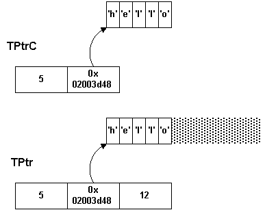
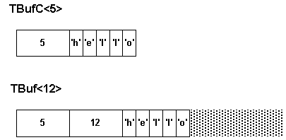
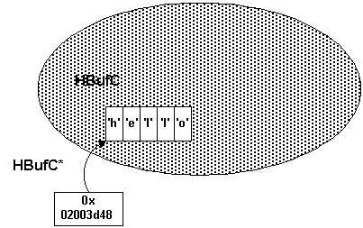
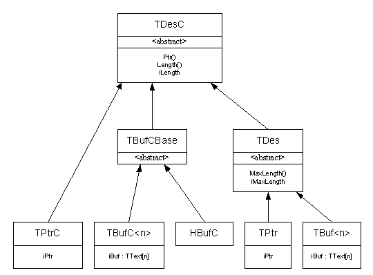

|
| |
Descriptors are both fundamental to the Symbian platform, and an excellent example of the difference of approach between non-OO and OO designs.
In C, a string such as
char* hello="hello";
causes some memory to be set aside containing the six characters ‘h’, ‘e’, ‘l’, ‘l’, ‘o’, ‘\0’. A function such as strlen() works by scanning the bytes starting from the beginning, and counting until it reaches the trailing null character. If you wish to extend the string, you need to know how much memory is allocated to it.
|
We can represent the basic requirements for strings by two abstract classes: TDesC and TDes.
TDesC is a constant, or non-modifiable, descriptor. It has an address and a length. Using a class like this, you can do any manipulations to a string, provided they do not alter the data. As a consequence, the TDesC class has many non-modifying functions.
TDes is a modifiable descriptor: it has, in addition, a maximum length. This allows the data to be manipulated, extended or contracted, provided it does not exceed the maximum length. As a consequence, TDes has many modifying functions which allow string manipulation.
It is a fundamental aspect of descriptors that they do not allow modification to exceed the allocated length. Other classes are provided to allow this, for instance CBufBase and derived classes. If a TDes function causes overflow, a panic will occur.
Because TDesC and TDes define all the functions needed to access and manipulate string and memory data, many functions take a const TDesC& parameter if they need to access data, or a TDes& parameter if they need to modify it.
|
The abstract descriptor classes have several implementations. The simplest are pointer descriptors.
TPtrC just has length and address: its representation needs just two machine words. A TPtrC may be set up to describe any existing data. A TPtr adds a maximum length, and so may be used to describe a buffer which is perhaps only partially allocated.

TPtrC and TPtr are somewhat like C char* pointers. But because the length is contained in the descriptor itself, there is no need to scan for trailing null characters, or to allocate room for them.
|
Buffer descriptors, TBufC and TBuf, contain their data as part of themselves, like char[] arrays in C.

These descriptor classes exploit C++’s template mechanism, using an integer parameter to specify the length.
|
Heap descriptors, HBufC, contain their data in heap cell.

This is like (char*) malloc(length+1) in C. As in C, these are used when you do not know the length required for a buffer in advance. Because buffer descriptors are allocated on the heap, they are always referred to through an HBufC*, rather than an HBufC directly.
|
The complete descriptor class hierarchy is

It represents an elegant use of OO. The TBufCBase class is used as an implementation convenience, which is also a frequent OO idiom (though it should be used with caution).
Descriptors make it easy to describe string data. When using descriptors for strings, you should always use classes such as TDes etc. In Unicode build variants, these classes are typedefed to TDes16 etc.
Because descriptors may contain any data, including nulls, they may also be used to refer to byte data and general buffers. In these contexts, you should always use TDes8 etc. directly, since 8-bit bytes are required whatever the build variant.
Copyright ©2002 Symbian Ltd. 6.1-00174 |
|